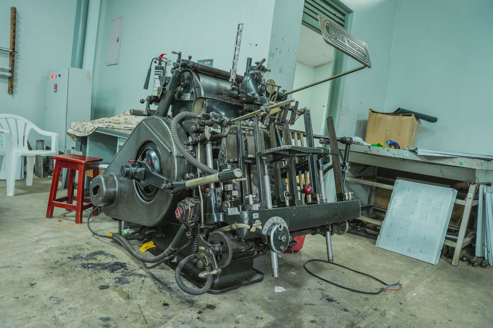
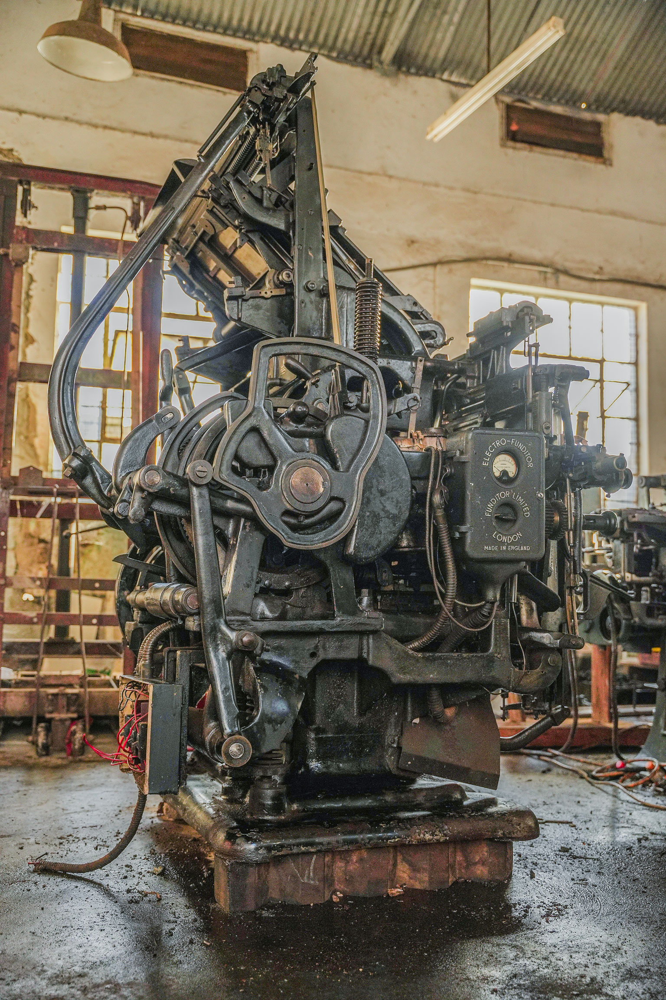

Historic machines
Explore the equipment that carried print from manual craft to mechanised production.
Discover the machines, people, craft and printed works that shaped Uganda's publishing heritage.
Welcome
The UPPC Print Heritage Museum collects, restores, documents and showcases the machines, skills and stories behind Uganda's printing and publishing history.

Explore the equipment that carried print from manual craft to mechanised production.

See the tools and techniques behind official documents, books and publications.

Meet the people and skills that helped preserve Uganda's printed record.
From the archives to the digital age
Colonial Foundations
The Government Printer was established in Entebbe in 1902, marking the beginning of Uganda's government printing service. The printing office served the Uganda Protectorate and produced official government materials including gazettes, notices and forms.
Colonial Foundations
In 1933, S. Foote served as Government Printer. His period of leadership focused on official printing services and the production of government publications.
Colonial Foundations
During the 1930s–1940s, J.H. Bowkett served as Government Printer. The period included increased printing output and mechanical improvements to the pressroom, particularly in support of colonial administration.
Colonial Foundations
Mechanical flatbed printing technology was used during the 1930s–1940s. The technology represented an important stage in the transition from manually operated printing to more mechanised production.
Independence
Monotype hot-metal typesetting technology was introduced to improve typography and increase the efficiency of producing government reports, laws and educational materials.
Independence
K.G. Chard is identified in the museum timeline as a Monotype Operator during the 1950s. The period reflects the growing use of hot-metal typesetting in government printing.
Institutional Growth
At Uganda's independence in 1962, the Government Printer continued under the Office of the President. Printing remained important for official documents, government publications and materials supporting the new nation.
Institutional Growth
The Uganda Printing and Publishing Corporation (UPPC) was formally established as a public enterprise under the UPPC Act of 1992. The Act established UPPC as a statutory corporation and formalised its role in government printing and publishing.
Liberalization
Irene Muwanguzi is identified in the timeline as Managing Director in 2014, during a period of modernisation and the introduction of digital workflows.
Liberalization
Prof. Tom Davis is identified in the timeline as Managing Director in 2019, with a focus on restructuring, capacity building and strengthening publishing operations.
Liberalization
Mr. Keneth Oluka is identified as Acting Director in 2021–2023.
Modern Era
Prof. Sudi Nangoli became Managing Director in 2023. His tenure is associated with continued modernisation, digital transformation and expansion of printing and publishing services.
Our purpose
The UPPC Print Heritage Museum exists to collect, restore, document and showcase the machines, skills and stories that built Uganda Printing and Publishing Corporation and the printed history of Uganda.
To be Uganda's leading centre for preserving and celebrating the art, science and heritage of printing - from the 1902 wooden nipping press that printed the first Protectorate Gazettes, to the Heidelberg SORD that printed Independence, to the digital future.
“Ink on Paper, History in Hand.”